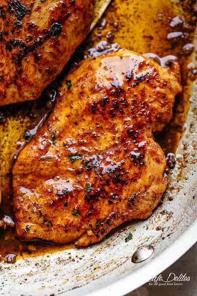

Cajun Chicken

Tender and incredibly juicy cajun butter chicken breasts.
Juicy boneless skinless chicken breasts cooked right on the stove is a dream come true. Forget dry breasts with this whopper of a recipe!
Ingredients for cajun seasoning
- 2 teaspoons brown sugar
- 1 1/2 teaspoons mild paprika
- 1 teaspoon dried oregano
- 1 teaspoon salt
- 1/2 teaspoon each garlic and onion powder
- 1/2 teaspoon each chili and cayenne (add more if you like spice)
- 1/4 teaspoon cracked black pepper
Ingredients for chicken
- 2 large chicken breasts sliced horizontally in half to make 4 steaks
- 1 1/2 tablespoons canola oil
- 1/4 cup butter
- 4 finely chopped garlic cloves
- 1/2 cup chicken broth
Cooking instructions
- Combine cajun seasoning ingredients and toss chicken in the seasoning. Drizzle with 1/2 tablespoon of oil and rub seasoning all over to evenly coat.
- Heat remaining oil and 1 tablespoon butter in a skillet or pan over medium-high heat until combined and hot.
- Sear chicken in batches for 5-7 minutes each side until golden or internal temperature is 165°F / 75°C using a meat thermometer. Remove from pan; set aside to rest for 5 minutes.
- While chicken is resting, make the sauce. Reduce heat to medium. Melt remaining butter in the pan. Sauté garlic until fragrant (about 30 seconds), while scraping up any browned bits from the pan. Pour in the broth and let reduce for 2-3 minutes, while stirring occasionally.
- Take pan off the heat. Drizzle sauce over chicken.
Main page